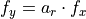
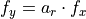

Introduction¶
What is the python camera module?¶
camera is a python module that provides functionality for projection from a 3D-scene to the 2D image plane of a camera. It also provides functionality for the reprojection from the 2d image plane to the scene in the 3D world coordinates. It is commonly required in engineering and science applications for georeferencing images.
How it works?¶
The camera geometry¶
Lets say, you take a photo of a scene with your camera. Your camera has a lens and a focal plane array (and a lot of other stuff we don’t care about). Fig. 1 shows how a real world point P(X,Y,Z) is being projected through the center of the lens on to the image pixel coordinates (u,v) of the camera’s focal plane array. The optical axis pierces the center of the lens and hits the focal plane in the principle point (cx,cy).
The image on the focal plane array is upside down. This leads to the fact that the axes of the image coordinates (u,v) point always in the reverse direction of the world (respectively the camera) coordinates.
Fig. 1 the projection through a camera
To get not that confused with the orientation, the computer vision people always invert the image coordinate system and move the image plane at the same distance (f) in front of the lens. Technically i think it is impossible to realize such a camera, but from the mathematical point of view this leads to the same solution. Fig. 2 shows the simplified model.

Fig. 2 simplified camera projection model (this image is based on an illustration from the openCV-Documentation)
Now the axes u and v point in the same direction as Xc and Yc. Zc points into the scene. The center of the lens is always the origin of the camera coordinate system. And we have a right sided coordinate system (left sided are used e.g. in geodetic applications).
Please have a look at the Open CV Camera Calibration Documentation The following documentation extends the OpenCV Docs or writes the same content in different words.
The pinhole camera model¶
The most simple camera model is the pinhole camera. It consists of a light-tight hollow body with a very small pinhole and a lightsensitive film or an image detector. Due to the fact that it has no lens there exists no geometric distortion or blurring of unfocused objects. .. The pinhole camera can be used as a first order approximation of the mapping from a 3D scene to the image of a real camera.
From the mathematical point of view, the pinhole camera is simply a central projection from 3D to a 2D plane. The projection distance is the focal length of the camera.
With the aid of homogenious coordinates, projective transformations like the central projection are much easier to describe. The projection of a 3D point onto the image plane of a pinhole camera can be described by the equation
The 3D point is expressed by the homogenious vector , while and  are the same as from our real world and W you can easily set to 1. The resulting image vector has the projective coordinates . To get the pixel coordinates you have to devide by its third component . is a projection matrix with
are the same as from our real world and W you can easily set to 1. The resulting image vector has the projective coordinates . To get the pixel coordinates you have to devide by its third component . is a projection matrix with
The rotation matrix and the translation vector are the euclidean transformation between the camera and the world coordinate system. We call these parameters the extrinsic camera parameters (or outer orientation). The camera calibration matrix (or inner orientation)
holds the intrinsic parameters of the camera.  and are the focal distances, with . Usually the aspect ratio is 1. When you now think: how could there be two focal distances for one lens? The answer is: when your detector elements are not quadratic (), then you can use the dectector element size in x or y direction as unit to measure the focal distance.
When your focal plane array is sheared you need to set different to 1. The central point of the camera is at (in pixels).
and are the focal distances, with . Usually the aspect ratio is 1. When you now think: how could there be two focal distances for one lens? The answer is: when your detector elements are not quadratic (), then you can use the dectector element size in x or y direction as unit to measure the focal distance.
When your focal plane array is sheared you need to set different to 1. The central point of the camera is at (in pixels).
The whole Equation is then:
The image pixel coordinates (u,v) are
Brown’s Camera Model¶
Until now we have ignored the distortion of the lens, but real camera lenses do have distortion. The brown camera model considers radial and tangential lens distortions.